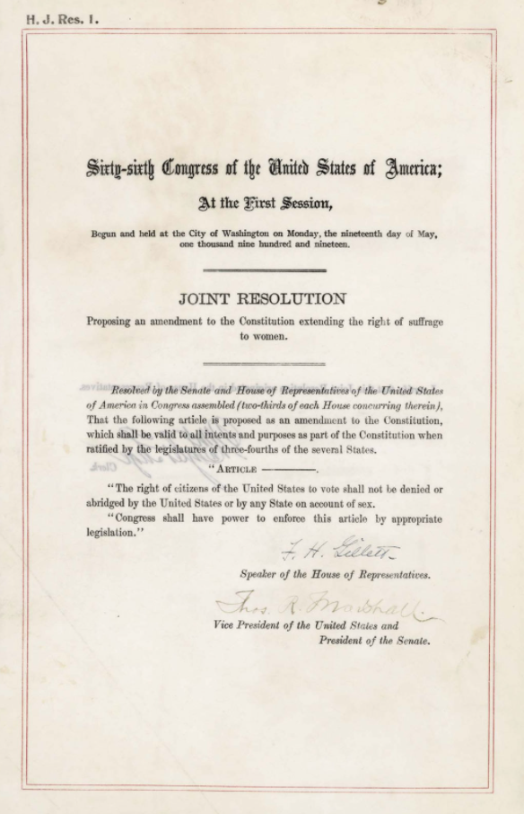

Introduction
-Saksham Garg
In a society, everybody has the proper to steer his/her life
consequently with none discrimination. once this state is achieved wherever all
people are a unit thought of to be equal regardless of their caste, gender,
colour, profession, and status, we have a tendency to decision its equality.
Equality can even be outlined because the state of affairs wherever each
individual has a similar rights and civil right to grow and prosper.
Every individual of society dreams for equal rights and access
to resources offered at their disposal, however there's heaps of
discrimination. This discrimination is often thanks to cultural variations,
geographical variations, the color of the individual, status and even gender.
the foremost prevailing discrimination is gender difference. it's not a
localized issue and is proscribed to solely sure spheres of life however is
prevailing across the world. Even in progressive societies and high
organizations, we will see several samples of gender bias.
Seeing gender as a spectrum
-Jia Chaudhary
“Gender as a spectrum” refers to the idea that there are many gender identities. It says that gender is not binary, but instead a spectrum (as the name suggests) because it is a personal identity and is socially constructed. It is important to spread this idea along because all of us face many restrictions concerning our genders. Think about it, everything is gendered including but not limited to washrooms, clothing, even colors! Most of the girls today have at least once been told to “walk like a girl” or “sit like a lady” and boys on countless occasions have been told to “be a man”. Who defines these terms, why is femininity related to being graceful and masculinity being strong. Why are these small things so prominent in every person’s life. Why is this taken as a social norm when these vary between societies and over time. Contrary to the belief, gender outside the normalized binary has been around much longer than we thought. Even in ancient Greece, the god of wine, Dionysus, was genderqueer. He possessed a gender identity that didn't align with the one coercively assigned to his body. At least 1,800 years ago, when the Kama Sutra was compiled; one passage in it refers to people who are not women but belong to the feminine gender. And that's the irony of the situation, genderqueer people have existed for more than centuries even, but still today people think that gender is binary.Pronouns concerning gender identity are a tricky thing. Unlike gender expression, gender identity is not outwardly visible to others. So there is no way of knowing what a person’s gender identity is; based on appearance alone. Keeping that in mind, a person's pronouns may not align with their gender identity. A person might identify as non-binary but use she/her pronouns. There are a lot of questions regarding this so I will do my best to answer some of the general ones. “What's the right way of asking someone’s pronouns?” You can start by introducing yourself, “hi, my name is so and so, and my pronouns are so and so”. It might feel awkward at first but it won't be long before it's just another social norm. “What to do if you accidentally misgender someone?” simply apologize and move on. Do not make it into a bigger deal than it needs to be. “How can we use they/them as a singular pronoun?” “they” is already used as a singular pronoun, for example, “someone dropped their wallet. I hope they find it.”. “How to use she/they or he/they pronouns?” you can use she/her and they/them interchangeably for the person. Usually, if you have any questions with regards to the pronouns of a particular person, I would recommend just asking them. Most trans people will not mind clearing any doubts. Asking them will be infinitely better than accidentally misgendering them or even, outing them.
Terminology regarding gender identity
Gender is often defined as a social construct of norms, behaviors, and roles that vary between societies and over time. Gender is often categorized as male, female or nonbinary.
Gender identity is one's own internal sense of self and gender, whether that is man, woman, neither, or both.
Gender expression is how a person presents gender outwardly, through behavior, clothing, voice, or other perceived characteristics. Society identifies these cues as masculine or feminine.
Cisgender is an adjective use to describe a person who’s sex and gender identity align. Most of the population identify as cisgender.
Transgender (or simply trans) is an adjective used to describe someone whose gender identity differs from the sex assigned at birth.
Non-binary/genderqueer is used to term people who do not fit into the normalized gender binary.
Agender refers to a person that does not identify with any gender, or absence of gender.
Gender transition is a process a person goes through to bring themselves and/or their bodies to align with their gender identity. Transitioning is not one step. It could take years and it includes coming out to your friends and family, going through hormonal therapy, changing names and pronouns on legal documents, etc.
Gender dysphoria refers to psychological distress that results from an incongruence between one's sex assigned at birth and one's gender identity. Dysphoria might not be a common occurrence for all trans people, everyone experiences it at varying intensities. Gender dysphoria is a diagnosis listed in the Diagnostic and Statistical Manual of Mental Disorders.
Gender euphoria satisfaction or enjoyment felt by a person due to consistency between their gender identity and gendered features. It is meant to be the positive counterpart of gender dysphoria.
Feminism and its history
-Tania Wadhwa
Feminism is the advocacy of social, economic and political equality of all sexes. To know more about feminism, it’s important to know its origin, history and such. Most of us probably know that feminism originated in Western Europe and the Americas.
The concept of feminism has existed since as early as 3rd century BCE. The first ever recorded protest was when Roman women filled the Capitoline Hill when consul Marcus Porcious Cato resisted attempts to repeal laws limiting women’s use of expensive goods. That was the only exceptional rebellion for in most recorded history, only isolated voices spoke out against the inferior status of women. Christine de Pisan, the first feminist philosopher, challenged attitudes toward women and called boldly for female education. Her opinion was taken up later taken up in the century by Laura Cereta, who published “Epistolae Familiares” which translates to “Collected Letters of a Renaissance Feminist.”
The feminist voices of the Renaissance never merged into a particular philosophy or movement, but it existed. This happened only with the Enlightenment, when women began to demand that the new reformist rhetoric about liberty, equality, and natural rights be applied to both sexes.
Enlightenment philosophers focused on the inequities of social castes more than the exlcusion of gender. Rosseau, who was a prominent figure in the French Revolution, portrayed women as silly and frivolous creatures who were born to be submitting. In addition, the Declaration of the Rights of Man and of the Citizen failed to address the political and legal status of women. Olympe de Gouges, a noted playwright and active feminist from the French Revolution era pointed out the lack of inclusivity and published the Declaration of the Rights of Woman and of the Female Citizen. Following this, The Age of Enlightenment turned into an era of political ferment marked by revolutions in France, Germany, and Italy.
The feministic ideology resulted in the first women’s rights convention in New York. It was a casual idea that sprang up during a social gather by Lucretia Mott, a social activist. Elizabeth Cady Stanton drew up the Declaration of Sentiments that guided this convention. She made a most radical demand— the right to vote. Fredrick Douglass, a former slave, argued eloquently on their behalf and all the 11 drafts made by Stanton were approved. The suffrage movement was far from over, though.
Once the crucial goal of suffrage had been achieved, the feminist movement virtually collapsed in both Europe and the United States. Lacking an ideology beyond the achievement of the vote, feminism fractured into a dozen splinter groups. Each of these groups offered some civic contribution, but none was specifically feminist in nature.
The second wave of feminism broke out in the 1960s and 70s. It represented an abrupt break from the peaceful suburban life that was pictured as the household American dream. Reports of domestic abuse by men in this period of time rose up by 79% and reports suggest more than 80% of domestic abuse and rape instances weren’t ever reported. In the late 1960s, then, the notion of a women’s rights movement took root at the same time as the civil rights movement, and women of all ages and circumstances were swept up in debates about gender, discrimination, and the nature of equality.
Like first-wave feminism, the second wave was largely defined and led by educated middle-class white women who built the movement primarily around their own concerns. The relationship of feminism to African-American women always posed greater challenges. White feminists defined gender as the principal source of their exclusion from full participation in American life; Black women were forced to confront the interplay between racism and sexism and to figure out how to make black men think about gender issues while making white women think about racial issues. Many Black women had difficulty seeing white women as their feminist sisters; in the eyes of many African Americans, after all, white women were as much the oppressor as white men. Yet some Black women, especially middle-class Black women, also insisted that it was fundamentally different to be Black and female than to be Black and male. During the first conference of the National Black Feminist Organization, held in New York City in 1973, Black women activists acknowledged that many of the goals central to the mainstream feminist movement—day care, abortion, maternity leave, violence—were critical to African American women as well. On specific issues, then, African American feminists and white feminists built an effective working relationship.
The Nineteenth Amendment, which granted women the right to vote in the United States.
The conflicts between women in developed and developing nations played out most vividly at international conferences. There were many instances of relating women’s issues to one another but one stood out most, In Beijing, at the Fourth World Conference on Women in 1995, Third World women again criticized the priority American and European women put on reproductive rights language and issues of discrimination on the basis of sexual orientation and their disinterest in the platform proposal that was most important to less-developed nations—that of restructuring international debt. Feminism achieved significant gains for women, as seen in the eradication of FGC in many African countries or government efforts to end widow burning in India. This and much more was known as the globalisation of feminism.
Although debated by some, many claim that a fourth wave of feminism began about 2012, with a focus on sexual harassment, body shaming, and rape culture, among other issues. A key component was the use of social media to highlight and address these concerns. The new wave arose amid a number of high-profile incidents. In December 2012 a young woman was brutally gang-raped in India and subsequently died, sparking local protests and international outrage.
Another significant event was the Me Too Movement, which was launched in 2006 in the United States to assist survivors of sexual violence, especially females of colour. The campaign gained widespread attention beginning in 2017, after it was revealed that film mogul Harvey Weinstein had for years sexually harassed and assaulted women in the industry with impunity. Victims of sexual harassment or assault around the world—and of all ethnicities—began sharing their experiences on social media, using the hashtag #MeToo. The movement grew over the coming months to bring condemnation to dozens of powerful men in politics, business, entertainment, and the news media.
Today, feminism doesn’t only stand for women’s rights but equal rights for all genders. For all people, regardless of race, gender identity, sexual orientation etc. Traditional stereotypes of men as socially dominant, along with related traits such as misogyny and homophobia, can be considered "toxic" due in part to their promotion of violence, including sexual assault and domestic violence. The socialization of boys in patriarchal societies often normalizes violence, such as in the saying "boys will be boys" about bullying and aggression. This leads to emotional repression and aggression of men towards women and anyone who doesn’t fit into the binary.
Myths about gender
-Shaurya Sharma
Myth: there are only two genders
The two most common genders are boy and girl or man
or woman and people often think that these are the only two genders. This is
idea that there are only two genders is known as gender binary if a child has a
gender binary that means they identify as either a boy or a girl, regardless of
the sex they were assigned at birth. But gender spectrum is not limited to just
two possibilities, A person may have a nonbinary gender, meaning they do no
identify strictly as a boy or a girl- they could identify as both, or neither,
or as another gender. Agender people do not identify with any gender.
Myth: Many transgender children change their mind
about their gender
Not all children and youth express themselves in
gender expansive ways are transgender. Gender identity and gender expression
are different aspects of our gender. Often, both in research and media reports,
this distinction isn’t properly made. Given the limited vocabulary we provide
children and youth with for gender, it can take some time for then to find the
language that fits for them when it comes to gender identity. What we know from
medical and mental health experts as well as from research in the area is that
transgender children are at least as certain in their gender identity as other
children are in theirs.
Myth: Being transgender or nonbinary is a sign of
mental illness.
Being transgender or nonbinary is not a mental
illness. People who are usually from the older generations teach this to the
younger generations but no, being transgender or nonbinary is not a mental
illness.
Some people experience gender dysphoria which is a diagnosis in the DSM, however this refers to the distress some people experience as a result of a disconnect between their gender and their sex. Minority stress factors often take a toll on transgender and nonbinary youth, who then experience levels of depression and anxiety as a result of harassment, bullying, discrimination and
stigmatization they experience. Outside of these minority stress factors, research indicates that gender-diverse youth who have parental support and are affirmed in their gender have similar mental health profiles as their cisgender peers.
Myth: Transgender and nonbinary people are doomed
to live unhappy lives
It is true that transgender and nonbinary youth are
at a higher risk for suicide, non-suicidal self-injury, substance abuse, eating
disorders, anxiety and depression compared to their cisgender counterparts,
there are known factors that can improve their mental health and well-being.
The most significant factor in a gender-expansive young person’s well-being.
The most significant factor in a gender-expansive young person’s well-being is
the support of family. Transgender and nonbinary people of all ages find love,
create families, and live fulling lives.
Myth: Women are more likely to die in disasters
than me
Women are more likely to die in some disasters in
some regions, but not in others (most of them). For example, men account for
70% of flood related deaths in the US and Europe, for several reasons.
Myth: All trans people are confused.
Trans people are no more confused or no less
confused than anyone else.
Myth: all trans people are gay
Being trans is about gender not about sexuality
they can be bi, straight, gay like any other person.
Myth: If you are a cross dresser or a gender queer
you want to change your gender
Not all people want to change their gender, it’s
about them being happy and doing what makes them feel comfortable
Myth: all trans, gay and bi people stick out like
sore thumbs
Everybody is different and they do not stand out in
a crowd, it does not matter what their sexuality or gender is.
Activism
-Saksham Garg
Gender roles discrimination may be thought-about non-existent by several within the fashionable society, which equality has finally been achieved. However, gender roles still play a large
role in extending inequalities. girls have passed through several problems,
obstacles, and barriers to changing into vital members of society. Previously,
girls had no rights, they were battered, neglected and isolated within the
hands of men. However, with the institution of feminism, the image and also the profile of girls has greatly changed; from being a society’s puppet to changing into queens, presidents, artists, teachers, etc. The fulminant spur of the increase of the adult female is thanks to
Firstly, the gradual rise in net penetration among India’s feminine population in each rural and concrete areas and straightforward access to social media has exposed Indian women to international data and information like ne'er before. Although, factors like caste, class, creed and community separate people from one another, social media acts as a good radical and brings along the activist and a private victim of a person's rights violation. Digital platforms like Twitter, Instagram, Facebook, WhatsApp et cetera supply the activist a chance to voice one’s issues, question the government’s actions, gather support and show commonality with the aggrieved people and their community.
Secondly, once young women from for the most part urban settings find out about instances of discrimination, oppression, and social process that they're usually not aware of in their immediate social environment; perhaps, due to additional or less gender-equal dynamics reception, a study of the ‘equality’ belief within the college info, active participation in faculty politics, and also the ‘equal opportunity culture at workplaces; they feel even additional powerfully concerning injustices and feel necessary to square up for his or her fellow voters and actively participate in condemnatory inequalities and injustices. once Licypriya Kangujam, the nine-year-old climate change-environmental and autochthonal peoples’ rights activist from the state was hand-picked amongst the inspiring girls of the country beneath the Indian Prime Minister’s #SheInspiresUs initiative in March 2020, once a lot of thought she set to show down the respect and tweeted in unequivocal terms: “Dear Narendra Modiji, please don’t celebrate Pine Tree State if you're not reaching to hear my voice.”
Unfortunately, there's still a protracted
thanks to visiting to win full equality of rights and opportunities between men
and girls. Therefore, it's of preponderant importance to finish the multiple
styles of gender violence and secure equal access to quality education and
health, economic resources and participation in political life for each girl
and women and men and boys. it's additionally essential to realize equal
opportunities in access to employment and to positions of leadership and
decision-making in the slightest degree levels.